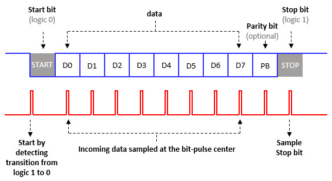

參考資訊：
https://www.microchip.com/en-us/product/attiny13#Documentation
https://nerdathome.blogspot.com/2008/04/avr-as-usage-tutorial.html
UART傳輸協定

.equ PINB, 0x16
.equ DDRB, 0x17
.equ PORTB, 0x18
.equ UART_TX, 2
.org 0x0000
rjmp main
.org 0x0020
main:
sbi DDRB, UART_TX
sbi PORTB, UART_TX
ldi r16, 0
loop:
inc r16
rcall uart_send
rcall delay
rjmp loop
uart_send:
mov r18, r16
cbi PORTB, UART_TX
rcall delay_97us
ldi r17, 8
0:
sbrs r18, 0
cbi PORTB, UART_TX
sbrc r18, 0
sbi PORTB, UART_TX
rcall delay_97us
lsr r18
dec r17
brne 0b
sbi PORTB, UART_TX
rcall delay_97us
ret
; 1 + (1 + 2) * 37) + 4 = 116
; 116 * (1 / 1200000) = 97us
delay_97us:
ldi r24, 37
0:
dec r24
brne 0b
ret
delay:
ldi r24, 0xff
ldi r25, 0xff
0:
sbiw r24, 1
brne 0b
ret
P.S. 使用出廠預設的Fuse(High=0xff, Low=0x6a)，CPU=9.6MHz, Div=8
編譯和燒錄
$ avr-as -mmcu=attiny13 -o main.o main.s $ avr-ld -o main.elf main.o $ avr-objcopy --output-target=ihex main.elf main.ihex $ sudo avrdude -c usbasp -p t13 -B 1024 -U flash:w:main.ihex:i
完成